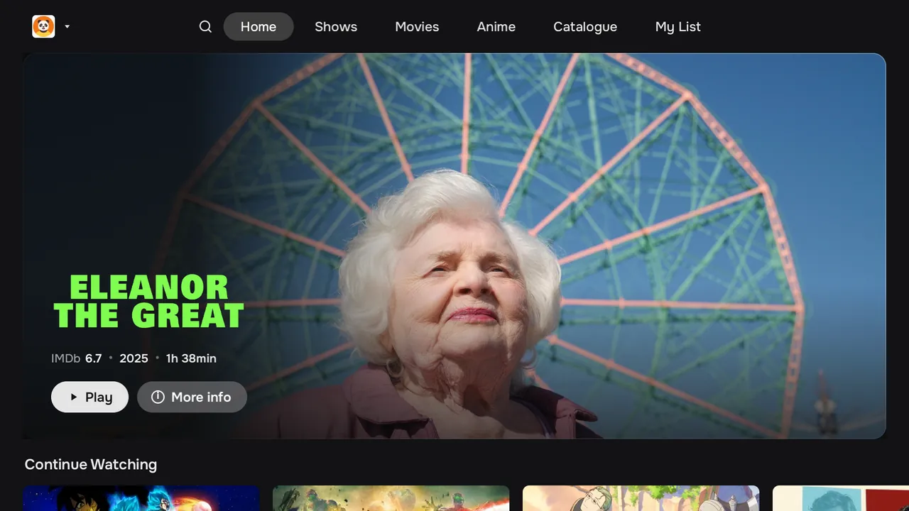
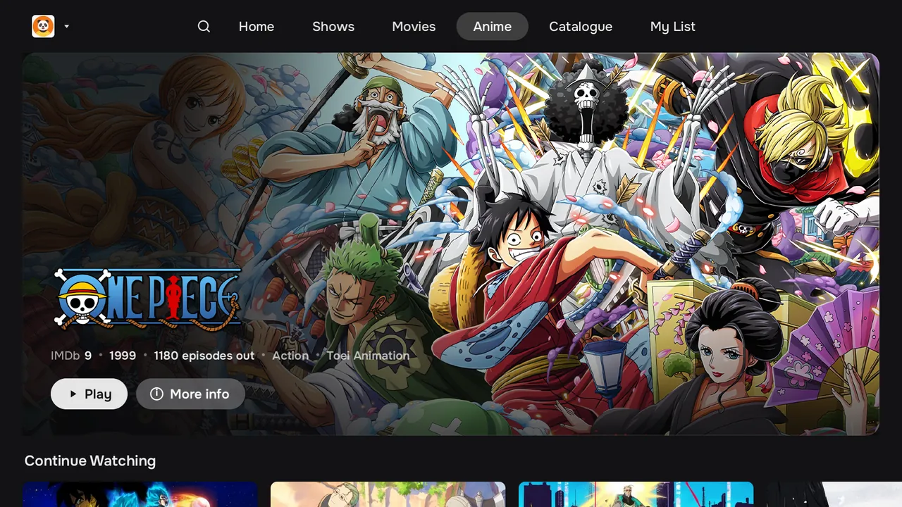
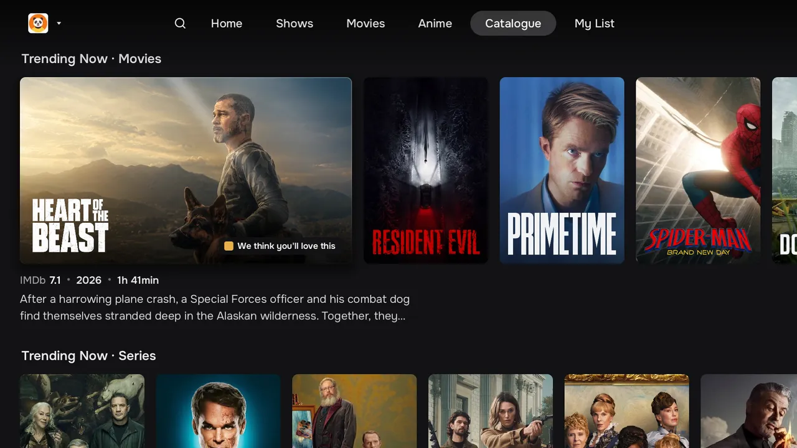
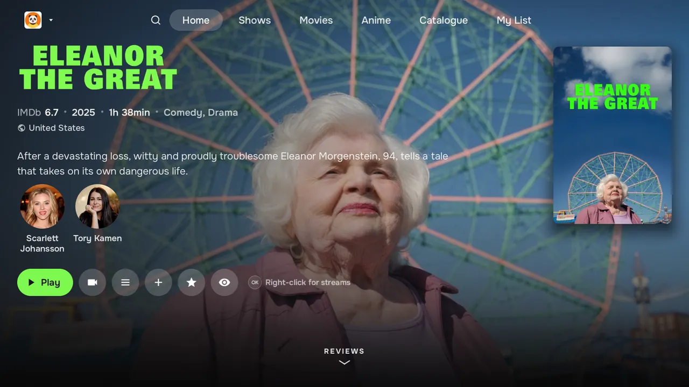

Shows tab
A billboard, then rows picked for you, such as Watch again and Binge-worthy.
A fast, native streaming app for your TV, phone and Windows PC.
Version 3.0.2 · Free · Open source · GPL-3.0

Pick your device to get its file.
See every downloadLG webOS
Easiest: in the Homebrew Channel’s Settings add https:/, then install Origin from its list.
Or, in Developer Mode, install io.github.betterstremio.origin_3.0.2_ (5.5 MB).
Android TV, Google TV and Fire TV
Most TVs and boxes: io.github.betterstremio.origin_3.0.2_ (7.3 MB).
Fire TV sticks and older boxes: io.github.betterstremio.origin_3.0.2_ (6.9 MB).
The Downloader app can fetch the file.
Windows
io.github.betterstremio.origin_3.0.2_ (44.9 MB, no admin prompt) or io.github.betterstremio.origin_3.0.2_ (59.7 MB).
The files are not code-signed, so SmartScreen says unknown publisher: choose More info, then Run anyway.
Android phones and tablets, beta
io.github.betterstremio.origin_3.0.2_android-phone-beta.apk (11.8 MB). It is a beta.Samsung TVs, preview
io.github.betterstremio.origin_3.0.2_ (7.4 MB), installed with Apps2Samsung in Developer Mode. It has not yet been run on a Samsung TV.
Origin needs a Stremio or Nuvio account. Addons you add list titles and return stream links. Origin ships empty and plays the links your addons return.
Every screen is drawn by the app itself in C, with no browser engine inside. Rows fetch their titles only as you get near them.
Runs on: LG webOSAndroid TVGoogle TVFire TVAndroid phonesWindowsSamsung TV (preview)
Home, Shows, Movies, Anime, Catalogue and My List. Shows and Movies can use For You: about 36 rows built from what you watch, which needs your own free TMDB key.
A billboard, then rows picked for you, such as Watch again and Binge-worthy.

The same layout for films. Without For You you get Cinemeta’s rows.

Off until you turn it on in Settings, Appearance. Its rows come from AniList.

Your collections and every catalogue your addons offer.

Rest on a card and it opens wide. A short clip or trailer from IMDb plays in it, or you can turn previews off.

Open a title to see its details, its cast and its reviews.
Stremio and Nuvio are streaming apps that use addons to find titles and streams. Origin ships empty: you bring your own account and addons. Sign in to either app with a QR code or email, or keep both signed in and switch under Settings, Account. Each keeps its own library and addons.

Add a profile from the picker, up to Nuvio’s limit of 6.

Choose your picture in the top bar to change profile.
This video is from version 2.0.0, when the app was called Better Stremio. It runs 78 seconds.
0:00 Upbeat music plays. A couple sits on a couch. A TV loading spinner freezes and a skeleton holds the remote.
“You finally convinced your girlfriend to try Stremio. Or your boyfriend. We don’t judge. They pressed the down button once. And the TV took a moment to reflect on its life. Two minutes later, they’re back on Netflix. And honestly? Fair.”
0:13 A counter reads 169,000. Boxes show JavaScript inside a browser inside a TV. A Better Stremio title replaces them.
“Because on our TV, Stremio and Nuvio feel laggy. Nuvio’s TV app is 169,000 lines of JavaScript, inside a web browser, inside your television. Better Stremio has no browser. 25,000 lines of C, talking straight to the graphics chip. It’s built on Stremio Origin. And then we took some very heavy inspiration from everything your partner likes about Netflix.”
0:33 The app plays a preview in the Home billboard, opens a poster into a wide preview, then shows the Top 10 and Because You Watched rows.
“A giant billboard, with the movie already playing. Rest on a card, it opens wide and plays the actual film, past the boring credits. Top 10, with the big numbers, because humans love a leaderboard. Because You Watched, worked out on your own TV, not in somebody’s cloud.”
0:48 Feature names flash on screen and the app switches accent colours.
“One press picks the best stream. Skip intro. Skip recap. Subtitles that actually sync. Dolby Vision. And [bleep] DTS, converted right on the TV. 20 accent colours, for the person who needs the app to match the couch.”
1:00 Platform names fill the screen in turn. The couple sits together again.
“LG TVs. Android TV. Google TV. Fire TV. Phones. Free and open source. Nuvio, we borrowed your P2P engine. Thank you. We love you. Still laggy. Better Stremio. Bring your own addons. Keep your relationship.”
1:14 The end card shows betterstremio.github.io. It says the app is free and open source, built on Stremio Origin, and uses your own Stremio account and addons. It credits the demo profile and identifies the film scenes, sketches and voice as AI-generated. The music fades out.
Every file is on the latest GitHub release.
io.github.betterstremio.origin_3.0.2_arm.ipk (5.5 MB)https://betterstremio.github.io/webos/apps.json , then install Origin from its list. Or, in Developer Mode, install the .ipk.io.github.betterstremio.origin_3.0.2_android-arm64.apk (7.3 MB).io.github.betterstremio.origin_3.0.2_android-armv7.apk (6.9 MB).io.github.betterstremio.origin_3.0.2_android-phone-beta.apk (11.8 MB). It is a beta.io.github.betterstremio.origin_3.0.2_windows_setup.exe (44.9 MB, no admin prompt)io.github.betterstremio.origin_3.0.2_windows_portable.zip (59.7 MB)io.github.betterstremio.origin_3.0.2_tizen-beta.tpk (7.4 MB)What you do depends on the version you have and the device.
From 3.0.0 the app id is io.github.betterstremio.origin, so Origin and Stremio Origin no longer replace each other and both can be on one TV.
The update installs the new app and opens it. On first start it copies your sign-in, profiles and settings from the old Origin, then removes the old app. Android asks once to confirm.
3.0.0 installs beside the old app. Open it once and it imports the same way.
The app updates to 2.1.12 first, then to 3.0.0. Installing 3.0.0 by hand on Android means signing in again.
Origin only imports from its own older versions. It never touches Stremio Origin’s data.